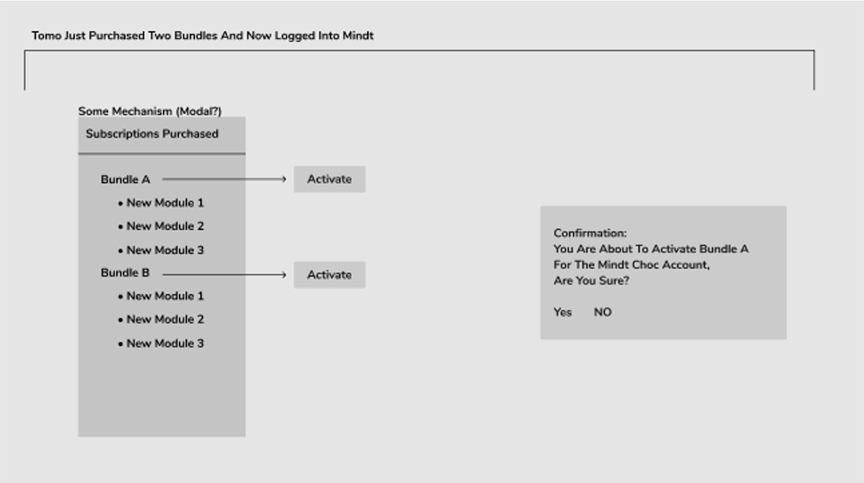
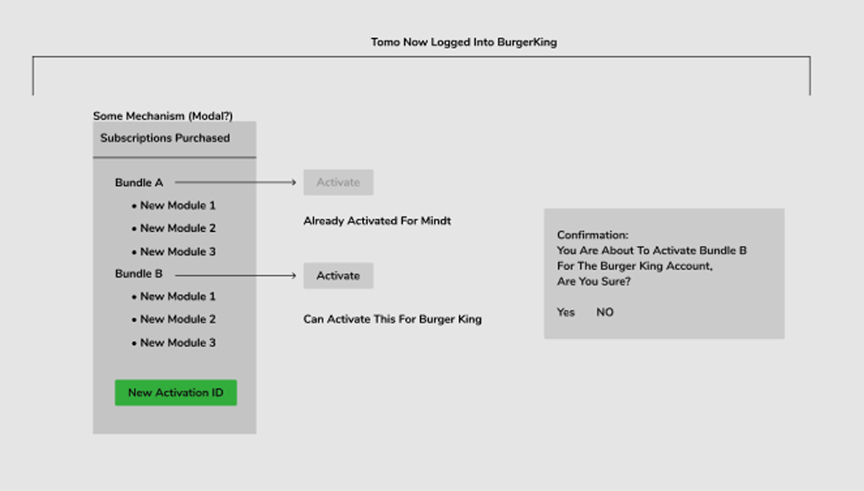

Two IA deliverables produced from customer interview findings — node hierarchy architecture and system relationship diagram — completed before any screen design began. Both directly informed the Configure and Investigate tab structure in the final product.

